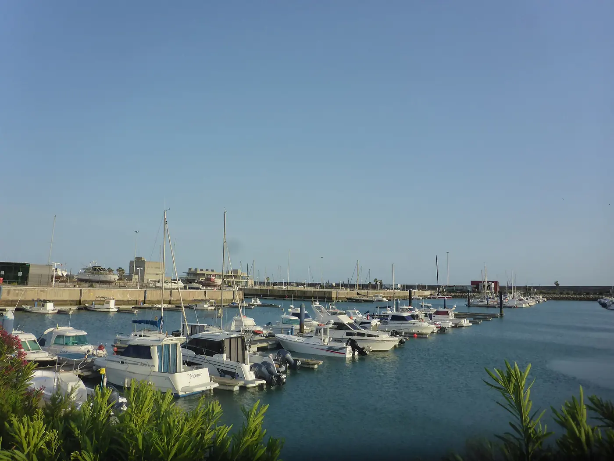
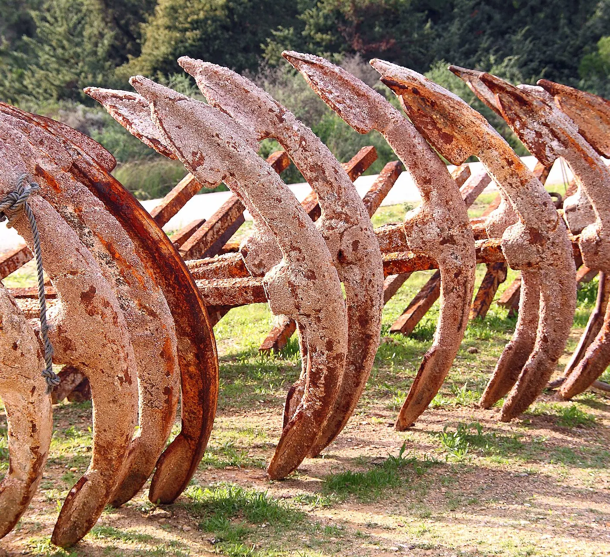

Ventresca en aceite de oliva
La barriga del atún, la parte más grasa. Se abre en láminas que se deshacen.
Todas las latas de la última levantá, con su peso y su precio. Se piden con el cupón y se pagan por transferencia o al recibirlas.

Una pieza por lata, en aceite de oliva virgen extra. El nombre de la pieza va impreso en la tapa.
La barriga del atún, la parte más grasa. Se abre en láminas que se deshacen.
La pieza en triángulo entre la ventresca y la cola. Grasa media y fibra fina.
La carne que cubre la nuca. Jugosa, oscura y con mucho sabor a mar.
El lomo bajo, sobre la barriga. Tierno y con algo de grasa.
El lomo negro de la espalda. Magro y firme, para ensalada.
¿No sabes cuál elegir? En la portada puedes ver dónde está cada pieza en el atún y montar tu caja de seis.
Cajas de cartón con la torre impresa. Desde una caja, el envío a la península no se cobra.
Dos de ventresca, dos de tarantelo y dos de morrillo.
Tres de lomo alto y tres de lomo blanco.
Seis latas de ventresca, para quien ya sabe lo que quiere.


Latas grandes para casas con mucha gente, la mojama y las huevas que se curan con sal en la misma nave, y dos untables.
Para casas con mucha gente o para cocinar con él.
La misma ventresca en lata de medio kilo.
Los trozos que quedan al cortar los lomos, en aceite.
Lomo curado con sal y secado al aire de levante. En lonchas finas.
Huevas prensadas y curadas en sal. Se cortan muy finas.
Lomo cocido en manteca con pimentón, a la manera antigua.
Lomo machacado con su aceite. Para pan tostado.
Morrillo con pimentón de la Vera, suave.
Sin pasarela de pago: en una tienda real, el cupón llegaría por correo y el pedido se cerraría por ese mismo camino.